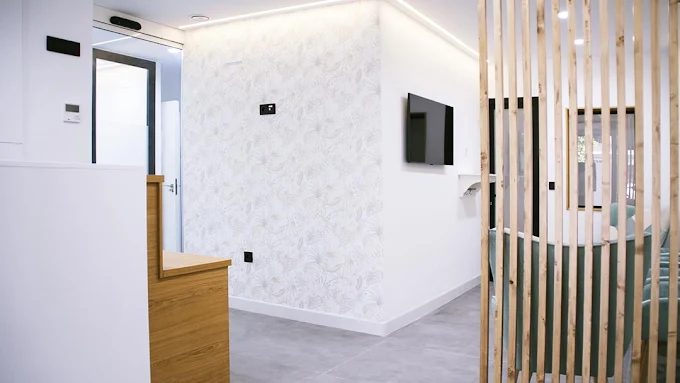
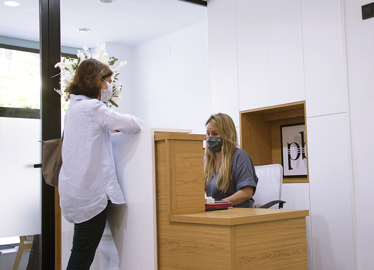
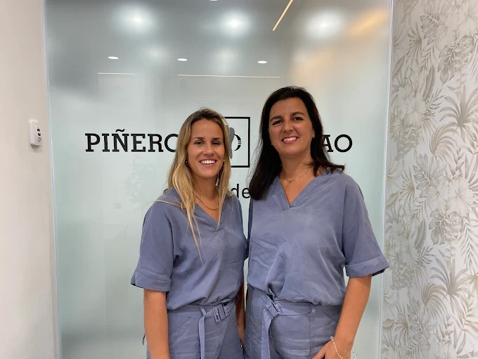

Escáner intraoral 3D
Obtenemos un modelo digital preciso de tu boca en segundos, sin moldes ni incomodidades.


Somos una clínica dental especializada en el barrio de Los Remedios de Sevilla, referencia para pacientes de toda la capital andaluza que buscan un dentista de confianza con tecnología avanzada y un trato verdaderamente cercano. En Piñero &; Bilbao combinamos la experiencia de nuestro equipo de especialistas con las herramientas digitales más actuales para ofrecerte el diagnóstico más preciso y el tratamiento más adecuado para tu caso, siempre con total transparencia y sin sorpresas.
Clínica Dental Piñero & Bilbao nació con un objetivo claro: ofrecer a los pacientes de Sevilla una odontología de especialista, honesta y sin barreras. Estamos ubicados en la calle Virgen de Luján, en pleno barrio de Los Remedios, con fácil acceso desde cualquier punto de la ciudad. Desde el primer día, apostamos por construir relaciones de confianza a largo plazo con cada paciente, su familia y varias generaciones. No somos una cadena dental: somos una clínica de barrio con tecnología de última generación.


En Piñero & Bilbao combinamos especialización, tecnología y un trato cercano para cuidar de tu salud bucodental y la de toda tu familia, con la tranquilidad de saber siempre qué tratamiento necesitas y cuánto cuesta.
El equipo de Piñero & Bilbao está formado por especialistas en cada área de la odontología: implantología, ortodoncia, periodoncia, endodoncia, estética dental y odontopediatría. Todos comparten una misma filosofía: la formación continua, la honestidad con el paciente y el uso de la tecnología como herramienta al servicio de la precisión clínica, no como elemento decorativo.
Nos importa que conozcas a las personas que van a cuidar de tu boca. Por eso trabajamos en equipo, discutimos los casos complejos en conjunto y nos aseguramos de que siempre haya un especialista con la formación adecuada para cada situación.

En Piñero & Bilbao creemos que la tecnología no es un lujo, sino una obligación hacia el paciente. Contar con los medios diagnósticos y terapéuticos adecuados nos permite detectar problemas antes de que se conviertan en algo mayor, planificar tratamientos complejos con mayor precisión y garantizar resultados más predecibles y duraderos.
Obtenemos un modelo digital preciso de tu boca en segundos, sin moldes ni incomodidades.
Imagen tridimensional del hueso y las estructuras profundas para una planificación implantológica y quirúrgica de máxima precisión.
Planificamos cada implante digitalmente y fabricamos férulas quirúrgicas que guían la intervención con precisión milimétrica.
Simulamos el resultado de tu tratamiento estético antes de empezar, para que lo apruebes antes de ejecutarlo.
Disponible para cualquier tratamiento, especialmente indicada para pacientes con miedo al dentista o intervenciones largas.
Sistema de limas NiTi con magnificación óptica para una limpieza más completa del sistema de conductos.
El miedo al dentista es uno de los motivos más frecuentes por los que las personas retrasan los tratamientos hasta que el problema se vuelve más grave y costoso de resolver. Lo entendemos y lo trabajamos activamente.
En Piñero & Bilbao aplicamos un protocolo específico para pacientes con odontofobia o alta ansiedad: primera visita sin tratamiento para que conozcas el entorno y al equipo, explicación detallada de cada paso antes de hacerlo, tiempos adaptados a tu ritmo y sedación consciente disponible para los casos que lo requieran. Muchos de nuestros pacientes más fieles llegaron con miedo la primera vez. Hoy vienen sin pensárselo.
Nuestra clínica dental está situada en la calle Virgen de Luján 11, bajo, en el barrio de Los Remedios de Sevilla (41011).
Una ubicación céntrica y de fácil acceso tanto en coche —con aparcamiento en la zona— como en transporte público desde cualquier punto de la ciudad.
Atendemos a pacientes del barrio de Los Remedios, Triana, Nervión, el Centro Histórico y de toda la provincia de Sevilla. También recibimos regularmente a pacientes internacionales que combinan su visita a Sevilla con el inicio o continuación de un tratamiento dental.
Si buscas un dentista en Sevilla de confianza, con tecnología avanzada y especialistas en cada área, en Piñero & Bilbao estamos preparados para recibirte. Llámanos, escríbenos por WhatsApp o rellena el formulario de contacto y te atendemos encantados. La primera visita es gratuita y sin compromiso.